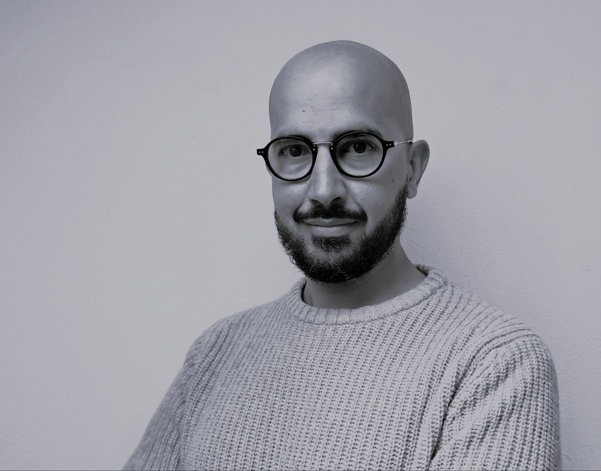

Diario de Campo The Field Journal
Biología marina · Sostenibilidad · Análisis de datos Marine biology · Sustainability · Data analysis

Naturalismo y trabajo de campo Naturalism & fieldwork
Biología marina y pesquera · Sostenibilidad · Trabajo de campo Marine and fisheries biology · Sustainability · Fieldwork
Biólogo con experiencia en observación científica a bordo de buques pesqueros y muestreo biológico. He complementado mi formación con experiencia en bioinformática y análisis de datos, y me preparo para ser observador meteorológico del Estado.
Biologist with experience in scientific observation aboard fishing vessels and biological sampling. I have complemented my training with experience in bioinformatics and data analysis, and I am preparing to become a State meteorological observer.
Biólogo formado en la Universidad de La Laguna, con trabajo de campo como observador científico en buques pesqueros y como asistente de investigación en el estudio de macrofauna y zooplancton. Mi trayectoria se ha movido siempre entre el mar, el dato y el informe riguroso.
Biologist trained at the University of La Laguna, with fieldwork as a scientific observer aboard fishing vessels and as a research assistant studying macrofauna and zooplankton. My career has always moved between the sea, the data and the rigorous report.
Además del campo, he trabajado varios años en bioinformática, análisis estadístico de datos y auditoría de sostenibilidad. Soy coautor de ocho publicaciones revisadas por pares y he revisado cuatro manuscritos para revistas internacionales. 1
Beyond fieldwork, I have spent several years in bioinformatics, statistical data analysis and sustainability auditing. I am co-author of eight peer-reviewed publications and have reviewed four manuscripts for international journals. 1
Biología marina, fauna, pesquerías y meteorología. Selección personal, con enlace a la fuente original.
Marine biology, wildlife, fisheries and meteorology. A personal selection, linked to the original source.
Asociación Nacional de Armadores de Buques Palangreros
Investigación, Planificación y Desarrollo S.A.
Investigación, Planificación y Desarrollo S.A.
Investigación, Planificación y Desarrollo S.A.
Museo de la Naturaleza y el Hombre de Santa Cruz de Tenerife
CIBER — Centro de Investigación Biomédica en Red
Hospital Universitario Central de Asturias (HUCA)
Travelife for Accommodation — Autónomo Travelife for Accommodation — Self-employed, London
Biolab Siete Mares | Preverisk Group
Universidad Nacional de Educación a Distancia (UNED) National University of Distance Education (UNED)
Investigación en salud ambiental, exposoma y ciencia de datos aplicada a exposiciones ambientales. Research in environmental health, exposome, and data science applied to environmental exposures.
Universitat Oberta de Catalunya
Formación en bioinformática, bioestadística y análisis cuantitativo de datos biológicos. Training in bioinformatics, biostatistics, and quantitative analysis of biological data.
Universidad de La Laguna University of La Laguna
Formación en biología, con especialización en Biología Marina y Biología Animal. Training in biology, with specialisation in Marine Biology and Animal Biology.
Ocho publicaciones revisadas por pares, una como primer autor. ORCID
Eight peer-reviewed publications, including one as first author. ORCID
Duarte-Herrera, I. D., López-Martínez, C., Rodríguez-García, R., Parra, D., Martín-Vicente, P., Exojo-Ramirez, S. M., Miravete-Lagunes, K., Iglesias, L., González-Iglesias, M., Fernández-Rodríguez, M., et al. (2024). Identification of host endotypes using peripheral blood transcriptomics in a prospective cohort of patients with endocarditis. International Journal of Infectious Diseases. doi.org/10.1016/j.ijid.2024.107235
Publicación como primer autor. Destacada por Physician's Weekly (2024).
First-author publication. Featured by Physician's Weekly (2024).
Exojo-Ramírez, S. M., Duarte-Herrera, I. D., Martín-Vicente, P., López-Martínez, C., Miravete-Lagunes, K., Ordoñez, I., Parra, D., Gómez, J., Campo Ortiz de Zárate, N. & Chacón, M., et al. (2026). The role of PPIA gene in lung repair during mechanical ventilation. Open Respiratory Archives. doi.org/10.1016/j.opresp.2026.100564
Pérez-Oliveira, S., Alvarez, I., Menendez-Gonzalez, M., Duarte-Herrera, I. D., Blázquez-Estrada, M., Castilla-Silgado, J., Suárez, E., García-Fernández, C., Siso-García, P., García-González, P., et al. (2024). HTT, ATXN1 and ATXN2 CAG triplet repeat sizes: Exploring their role in disease risk and cancer comorbidity in Parkinson's disease. Brain Communications. doi.org/10.1093/braincomms/fcaf060
Martín-Vicente, P., López-Martínez, C., López-Alonso, I., Exojo-Ramírez, S. M., Duarte-Herrera, I. D., Amado-Rodríguez, L., Ordoñez, I., Cuesta-Llavona, E., Gómez, J., Campo, N., et al. (2024). Mechanical stretch induces senescence of lung epithelial cells and drives fibroblast activation by paracrine mechanisms. American Journal of Respiratory Cell and Molecular Biology. doi.org/10.1165/rcmb.2023-0449oc
Pérez-Oliveira, S., Álvarez, I., Rosas, I., et al. (2022). Intermediate and expanded HTT alleles and the risk for α-synucleinopathies. Movement Disorders. doi.org/10.1002/mds.29153
Cuesta-Llavona, E., Lorca, R., Rolle, V., et al. (2022). Association of the genetic variation in the long non-coding RNA FENDRR with the risk of developing hypertrophic cardiomyopathy. Life. doi.org/10.3390/life12060818
Rosas, I., Morís, G., Coto, E., et al. (2022). Smoking is associated with age at disease onset in Parkinson's disease. Parkinsonism & Related Disorders. doi.org/10.1016/j.parkreldis.2022.03.005
Cuesta-Llavona, E., Albaiceta, G. M., García-Clemente, M., et al. (2021). Association between the interferon-induced transmembrane protein 3 gene (IFITM3) rs34481144/rs12252 haplotypes and COVID-19. Current Research in Virological Science. doi.org/10.1016/j.crviro.2021.100016